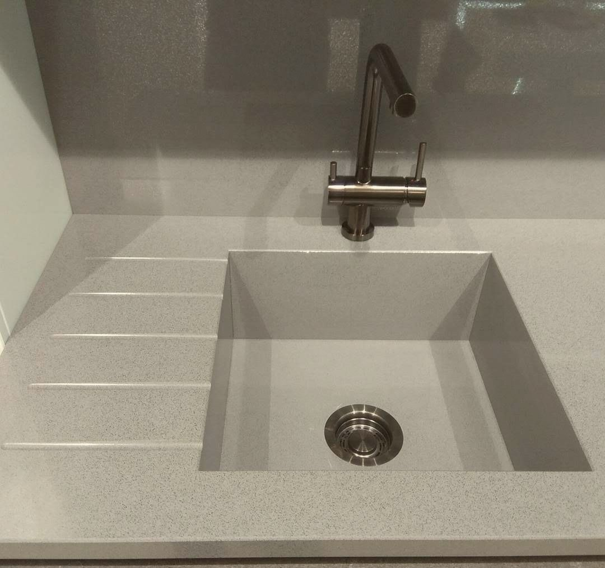
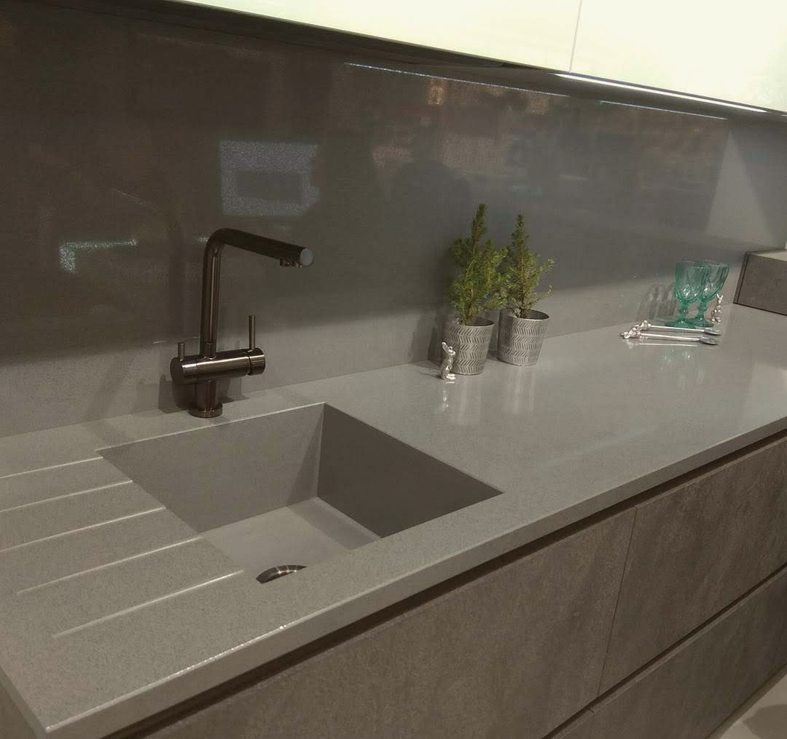
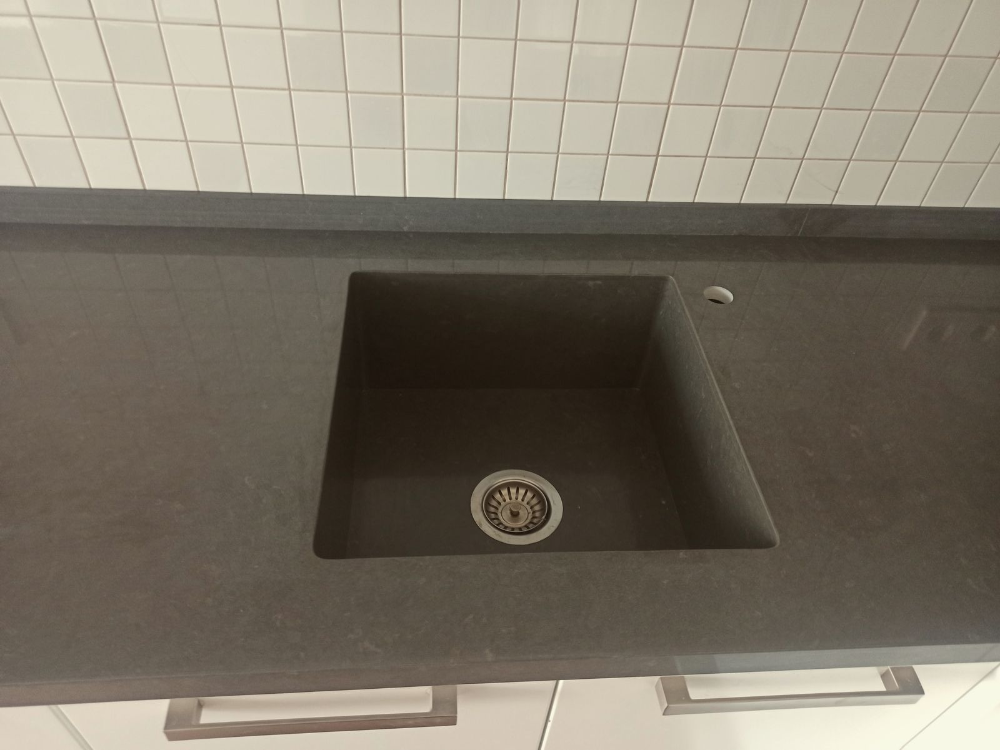
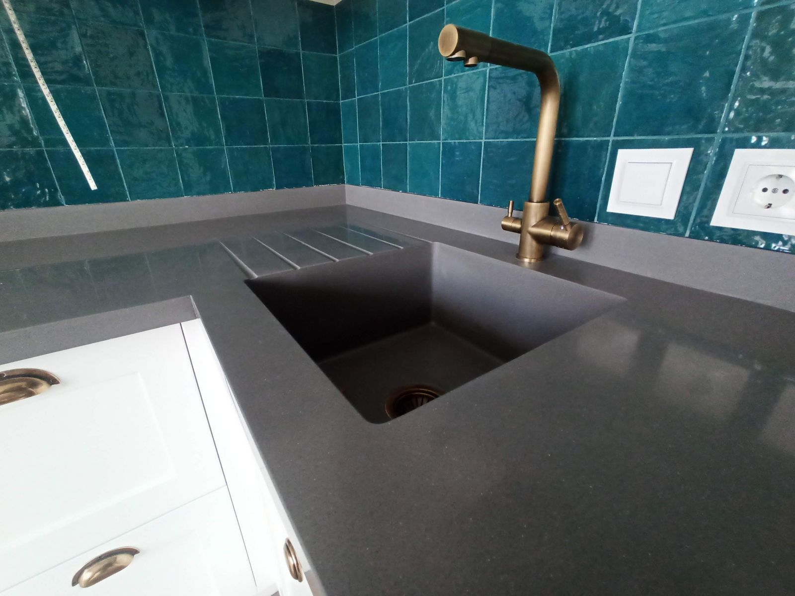

Fregaderosde piedra
El fregadero sale de la misma piedra que la encimera: sin juntas, sin contraste, sin suciedad.
Precio bajo presupuesto

Un fregadero de piedra a medida se fabrica con el mismo material que la encimera, de modo que ambos parecen una sola pieza. Lo montamos bajo encimera o completamente integrado, con las paredes del seno en inglete y el fondo con pendiente hacia el desagüe. Sobre la encimera fresamos un escurridor con ranuras para que el agua vuelva al seno. Fabricamos senos simples, dobles y de gran tamaño en porcelánico, cuarzo, mármol y solid surface.
Por qué con nosotros
- 01
Mismo material
Fregadero y encimera del mismo color y acabado.
- 02
Sin rebordes
Nada donde se acumule la suciedad.
- 03
Escurridor fresado
Ranuras en la encimera que vierten al seno.
- 04
Medida libre
Seno simple, doble o XL para tu cocina.
Detalles técnicos
Lo queconviene saber
Precios orientativos sin IVA. El precio final depende del material, las medidas y la instalación.
- Materiales
- porcelánico, cuarzo, mármol, solid surface
- Montaje
- bajo encimera o integrado
- Senos
- simple, doble, XL hasta 1000 mm
- Fondo
- con pendiente al desagüe
- Extras
- escurridor fresado, hueco para grifo
Trabajos
Del tallera tu casa



Cómo trabajamos
Cuatro pasos,un responsable
- 01
Medición
Medimos en tu casa con láser o plantilla.
- 02
Diseño
Plano técnico y elección de la placa contigo.
- 03
Fabricación
Corte, CNC y pulido en nuestro taller de Novelda.
- 04
Instalación
Nuestro equipo monta, sella y limpia.
Preguntas
Preguntasfrecuentes
¿Un fregadero de mármol es buena idea?
Es precioso pero exigente: los ácidos lo marcan. Para uso intensivo recomendamos porcelánico o cuarzo.
¿Se puede integrar un fregadero en mi encimera actual?
Depende del material y del estado. Normalmente lo hacemos junto con una encimera nueva.
¿Aguanta el agua caliente?
Sí. Porcelánico y granito sin problema; en cuarzo evitamos verter agua hirviendo directamente.
Contacto
Pide tupresupuesto
- WhatsApp+34 652 69 20 97
- Teléfono+34 652 69 20 97
- TallerL'Estació de Novelda, 03660 Novelda, AlicanteAlicante, Elche, Novelda, Benidorm, Torrevieja, Jávea y toda la Costa Blanca